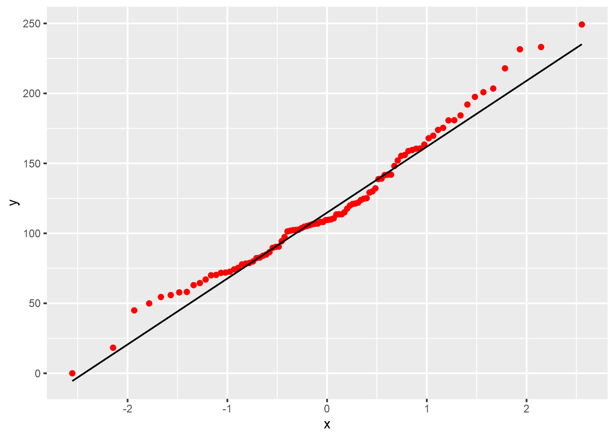

<!DOCTYPE html>
<html lang="" xml:lang="">
<head>

  <meta charset="utf-8" />
  <meta http-equiv="X-UA-Compatible" content="IE=edge" />
  <title>11 Gruppenunterschiede erforschen | How 2 do Things with Numbers (SS 2022)</title>
  <meta name="description" content="11 Gruppenunterschiede erforschen | How 2 do Things with Numbers (SS 2022)" />
  <meta name="generator" content="bookdown 0.24 and GitBook 2.6.7" />

  <meta property="og:title" content="11 Gruppenunterschiede erforschen | How 2 do Things with Numbers (SS 2022)" />
  <meta property="og:type" content="book" />
  
  
  
  

  <meta name="twitter:card" content="summary" />
  <meta name="twitter:title" content="11 Gruppenunterschiede erforschen | How 2 do Things with Numbers (SS 2022)" />
  
  
  

<meta name="author" content="Kami Höferl | https://orcid.org/0000-0002-5397-180X" />


  <meta name="viewport" content="width=device-width, initial-scale=1" />
  <meta name="apple-mobile-web-app-capable" content="yes" />
  <meta name="apple-mobile-web-app-status-bar-style" content="black" />
  
  
<link rel="prev" href="10_metrische_zusammenhaenge.html"/>
<link rel="next" href="11_gruppenunterschiede_v2.html"/>
<script src="libs/header-attrs-2.12/header-attrs.js"></script>
<script src="libs/jquery-3.6.0/jquery-3.6.0.min.js"></script>
<script src="https://cdn.jsdelivr.net/npm/fuse.js@6.4.6/dist/fuse.min.js"></script>
<link href="libs/gitbook-2.6.7/css/style.css" rel="stylesheet" />
<link href="libs/gitbook-2.6.7/css/plugin-table.css" rel="stylesheet" />
<link href="libs/gitbook-2.6.7/css/plugin-bookdown.css" rel="stylesheet" />
<link href="libs/gitbook-2.6.7/css/plugin-highlight.css" rel="stylesheet" />
<link href="libs/gitbook-2.6.7/css/plugin-search.css" rel="stylesheet" />
<link href="libs/gitbook-2.6.7/css/plugin-fontsettings.css" rel="stylesheet" />
<link href="libs/gitbook-2.6.7/css/plugin-clipboard.css" rel="stylesheet" />


<link href="libs/anchor-sections-1.1.0/anchor-sections.css" rel="stylesheet" />
<link href="libs/anchor-sections-1.1.0/anchor-sections-hash.css" rel="stylesheet" />
<script src="libs/anchor-sections-1.1.0/anchor-sections.js"></script>
<html>

  <head>
  <script>
    window.addEventListener("load", () => {
        const enabled = document.querySelectorAll(".fullscreen-enabled");
        for (let i = 0; i < enabled.length; i++) {
            enabled[i].style.cursor = "pointer";
            enabled[i].onclick = () => {
                enabled[i].requestFullscreen();
            };
        }
    });
  </script>
  </head>

  <body>
  <!-- body content here -->
  </body>

</html>


<style type="text/css">
pre > code.sourceCode { white-space: pre; position: relative; }
pre > code.sourceCode > span { display: inline-block; line-height: 1.25; }
pre > code.sourceCode > span:empty { height: 1.2em; }
.sourceCode { overflow: visible; }
code.sourceCode > span { color: inherit; text-decoration: inherit; }
pre.sourceCode { margin: 0; }
@media screen {
div.sourceCode { overflow: auto; }
}
@media print {
pre > code.sourceCode { white-space: pre-wrap; }
pre > code.sourceCode > span { text-indent: -5em; padding-left: 5em; }
}
pre.numberSource code
  { counter-reset: source-line 0; }
pre.numberSource code > span
  { position: relative; left: -4em; counter-increment: source-line; }
pre.numberSource code > span > a:first-child::before
  { content: counter(source-line);
    position: relative; left: -1em; text-align: right; vertical-align: baseline;
    border: none; display: inline-block;
    -webkit-touch-callout: none; -webkit-user-select: none;
    -khtml-user-select: none; -moz-user-select: none;
    -ms-user-select: none; user-select: none;
    padding: 0 4px; width: 4em;
    color: #aaaaaa;
  }
pre.numberSource { margin-left: 3em; border-left: 1px solid #aaaaaa;  padding-left: 4px; }
div.sourceCode
  {   }
@media screen {
pre > code.sourceCode > span > a:first-child::before { text-decoration: underline; }
}
code span.al { color: #ff0000; font-weight: bold; } /* Alert */
code span.an { color: #60a0b0; font-weight: bold; font-style: italic; } /* Annotation */
code span.at { color: #7d9029; } /* Attribute */
code span.bn { color: #40a070; } /* BaseN */
code span.bu { } /* BuiltIn */
code span.cf { color: #007020; font-weight: bold; } /* ControlFlow */
code span.ch { color: #4070a0; } /* Char */
code span.cn { color: #880000; } /* Constant */
code span.co { color: #60a0b0; font-style: italic; } /* Comment */
code span.cv { color: #60a0b0; font-weight: bold; font-style: italic; } /* CommentVar */
code span.do { color: #ba2121; font-style: italic; } /* Documentation */
code span.dt { color: #902000; } /* DataType */
code span.dv { color: #40a070; } /* DecVal */
code span.er { color: #ff0000; font-weight: bold; } /* Error */
code span.ex { } /* Extension */
code span.fl { color: #40a070; } /* Float */
code span.fu { color: #06287e; } /* Function */
code span.im { } /* Import */
code span.in { color: #60a0b0; font-weight: bold; font-style: italic; } /* Information */
code span.kw { color: #007020; font-weight: bold; } /* Keyword */
code span.op { color: #666666; } /* Operator */
code span.ot { color: #007020; } /* Other */
code span.pp { color: #bc7a00; } /* Preprocessor */
code span.sc { color: #4070a0; } /* SpecialChar */
code span.ss { color: #bb6688; } /* SpecialString */
code span.st { color: #4070a0; } /* String */
code span.va { color: #19177c; } /* Variable */
code span.vs { color: #4070a0; } /* VerbatimString */
code span.wa { color: #60a0b0; font-weight: bold; font-style: italic; } /* Warning */
</style>

<style type="text/css">
/* Used with Pandoc 2.11+ new --citeproc when CSL is used */
div.csl-bib-body { }
div.csl-entry {
  clear: both;
}
.hanging div.csl-entry {
  margin-left:2em;
  text-indent:-2em;
}
div.csl-left-margin {
  min-width:2em;
  float:left;
}
div.csl-right-inline {
  margin-left:2em;
  padding-left:1em;
}
div.csl-indent {
  margin-left: 2em;
}
</style>

<link rel="stylesheet" href="style.css" type="text/css" />
</head>

<body>


  <div class="book without-animation with-summary font-size-2 font-family-1" data-basepath=".">

    <div class="book-summary">
      <nav role="navigation">

<ul class="summary">
<li><a href="index.html#howdy">Howdy<span></span></a></li>
<li class="chapter" data-level="1" data-path="01_syllabus.html"><a href="01_syllabus.html"><i class="fa fa-check"></i><b>1</b> Ouvertüre (aka “Syllabus”)<span></span></a>
<ul>
<li class="chapter" data-level="1.1" data-path="01_syllabus.html"><a href="01_syllabus.html#lernziele"><i class="fa fa-check"></i><b>1.1</b> Lernziele<span></span></a></li>
<li class="chapter" data-level="1.2" data-path="01_syllabus.html"><a href="01_syllabus.html#zeitplanung"><i class="fa fa-check"></i><b>1.2</b> Zeitplanung<span></span></a></li>
<li class="chapter" data-level="1.3" data-path="01_syllabus.html"><a href="01_syllabus.html#rulez-of-the-game"><i class="fa fa-check"></i><b>1.3</b> Rulez of the Game<span></span></a></li>
<li class="chapter" data-level="1.4" data-path="01_syllabus.html"><a href="01_syllabus.html#übungsteile"><i class="fa fa-check"></i><b>1.4</b> Übungsteile<span></span></a></li>
<li class="chapter" data-level="1.5" data-path="01_syllabus.html"><a href="01_syllabus.html#bewertungskriterien"><i class="fa fa-check"></i><b>1.5</b> Bewertungskriterien<span></span></a></li>
<li class="chapter" data-level="1.6" data-path="01_syllabus.html"><a href="01_syllabus.html#formelles-zu-den-übungsarbeiten"><i class="fa fa-check"></i><b>1.6</b> Formelles zu den Übungsarbeiten<span></span></a></li>
<li class="chapter" data-level="1.7" data-path="01_syllabus.html"><a href="01_syllabus.html#empfehlung-zur-eingesetzten-software"><i class="fa fa-check"></i><b>1.7</b> Empfehlung zur eingesetzten Software<span></span></a></li>
<li class="chapter" data-level="1.8" data-path="01_syllabus.html"><a href="01_syllabus.html#ausgewählte-hilfestellungen-zum-thema-r-und-rstudio"><i class="fa fa-check"></i><b>1.8</b> Ausgewählte Hilfestellungen zum Thema R und RStudio<span></span></a></li>
<li class="chapter" data-level="1.9" data-path="01_syllabus.html"><a href="01_syllabus.html#literatur"><i class="fa fa-check"></i><b>1.9</b> Literatur zur Lehrveranstaltung<span></span></a></li>
</ul></li>
<li class="chapter" data-level="2" data-path="02_forschungsprozess.html"><a href="02_forschungsprozess.html"><i class="fa fa-check"></i><b>2</b> Wege zum empirischen Forschen<span></span></a>
<ul>
<li><a href="02_forschungsprozess.html#zielsetzung-dieser-einheit">📢 Zielsetzung dieser Einheit<span></span></a></li>
<li class="chapter" data-level="2.1" data-path="02_forschungsprozess.html"><a href="02_forschungsprozess.html#wozu-empirie"><i class="fa fa-check"></i><b>2.1</b> Wozu Empirie?<span></span></a></li>
<li class="chapter" data-level="2.2" data-path="02_forschungsprozess.html"><a href="02_forschungsprozess.html#aber-wie"><i class="fa fa-check"></i><b>2.2</b> Aber wie?<span></span></a></li>
<li class="chapter" data-level="2.3" data-path="02_forschungsprozess.html"><a href="02_forschungsprozess.html#hauptsache-daten"><i class="fa fa-check"></i><b>2.3</b> Hauptsache Daten?<span></span></a></li>
</ul></li>
<li class="chapter" data-level="3" data-path="03_messen.html"><a href="03_messen.html"><i class="fa fa-check"></i><b>3</b> Warmup: Messen und Skalen<span></span></a>
<ul>
<li><a href="03_messen.html#zielsetzung-dieser-einheit-1">📢 Zielsetzung dieser Einheit<span></span></a></li>
<li class="chapter" data-level="3.1" data-path="03_messen.html"><a href="03_messen.html#was-passiert-beim-messen"><i class="fa fa-check"></i><b>3.1</b> Was passiert beim Messen?<span></span></a></li>
<li class="chapter" data-level="3.2" data-path="03_messen.html"><a href="03_messen.html#skalenniveaus-reloaded"><i class="fa fa-check"></i><b>3.2</b> Skalenniveaus (reloaded)<span></span></a></li>
</ul></li>
<li class="chapter" data-level="4" data-path="04_messen_primaer_sekundaerdaten.html"><a href="04_messen_primaer_sekundaerdaten.html"><i class="fa fa-check"></i><b>4</b> Sekundärdaten gewinnen<span></span></a>
<ul>
<li><a href="04_messen_primaer_sekundaerdaten.html#zielsetzung-dieser-einheit-2">📢 Zielsetzung dieser Einheit<span></span></a></li>
<li class="chapter" data-level="4.1" data-path="04_messen_primaer_sekundaerdaten.html"><a href="04_messen_primaer_sekundaerdaten.html#sekundär-daten-gewinnen"><i class="fa fa-check"></i><b>4.1</b> (Sekundär-)Daten gewinnen<span></span></a>
<ul>
<li class="chapter" data-level="4.1.1" data-path="04_messen_primaer_sekundaerdaten.html"><a href="04_messen_primaer_sekundaerdaten.html#ein-technischer-aspekt-der-gewinnung-von-sekundärdaten"><i class="fa fa-check"></i><b>4.1.1</b> Ein technischer Aspekt der Gewinnung von Sekundärdaten<span></span></a></li>
</ul></li>
<li class="chapter" data-level="4.2" data-path="04_messen_primaer_sekundaerdaten.html"><a href="04_messen_primaer_sekundaerdaten.html#zur-qualität-von-sekundärdaten"><i class="fa fa-check"></i><b>4.2</b> Zur Qualität von Sekundärdaten<span></span></a></li>
<li class="chapter" data-level="4.3" data-path="04_messen_primaer_sekundaerdaten.html"><a href="04_messen_primaer_sekundaerdaten.html#sekundärdaten-als-open-data-nutzen-können"><i class="fa fa-check"></i><b>4.3</b> Sekundärdaten als “Open Data” nutzen (können)<span></span></a></li>
</ul></li>
<li class="chapter" data-level="5" data-path="05_primaererhebung.html"><a href="05_primaererhebung.html"><i class="fa fa-check"></i><b>5</b> Primärdaten gewinnen<span></span></a>
<ul>
<li><a href="05_primaererhebung.html#zielsetzung-dieser-einheit-3">📢 Zielsetzung dieser Einheit<span></span></a></li>
<li class="chapter" data-level="5.1" data-path="05_primaererhebung.html"><a href="05_primaererhebung.html#nicht-rekative-verfahren"><i class="fa fa-check"></i><b>5.1</b> Nicht-rekative Verfahren<span></span></a></li>
<li class="chapter" data-level="5.2" data-path="05_primaererhebung.html"><a href="05_primaererhebung.html#beobachtungen"><i class="fa fa-check"></i><b>5.2</b> Beobachtungen<span></span></a></li>
<li class="chapter" data-level="5.3" data-path="05_primaererhebung.html"><a href="05_primaererhebung.html#befragungen"><i class="fa fa-check"></i><b>5.3</b> Befragungen<span></span></a></li>
<li class="chapter" data-level="5.4" data-path="05_primaererhebung.html"><a href="05_primaererhebung.html#special-die-stichprobenziehung"><i class="fa fa-check"></i><b>5.4</b> Special: Die Stichprobenziehung<span></span></a></li>
</ul></li>
<li class="chapter" data-level="6" data-path="06_basics_datananalyse.html"><a href="06_basics_datananalyse.html"><i class="fa fa-check"></i><b>6</b> Die Basics zur Datenanalyse<span></span></a>
<ul>
<li><a href="06_basics_datananalyse.html#zielsetzung-dieser-einheit-4">📢 Zielsetzung dieser Einheit<span></span></a></li>
<li class="chapter" data-level="6.1" data-path="06_basics_datananalyse.html"><a href="06_basics_datananalyse.html#daten-analysieren---aber-wie"><i class="fa fa-check"></i><b>6.1</b> Daten analysieren - aber wie?<span></span></a></li>
<li class="chapter" data-level="6.2" data-path="06_basics_datananalyse.html"><a href="06_basics_datananalyse.html#die-hilfsmittel-r-rstudio"><i class="fa fa-check"></i><b>6.2</b> Die Hilfsmittel R &amp; RStudio<span></span></a></li>
<li class="chapter" data-level="6.3" data-path="06_basics_datananalyse.html"><a href="06_basics_datananalyse.html#grundlegende-datenstrukturen-in-r"><i class="fa fa-check"></i><b>6.3</b> Grundlegende Datenstrukturen in R<span></span></a></li>
<li class="chapter" data-level="6.4" data-path="06_basics_datananalyse.html"><a href="06_basics_datananalyse.html#daten-im--und-exportieren"><i class="fa fa-check"></i><b>6.4</b> Daten im- und exportieren<span></span></a>
<ul>
<li class="chapter" data-level="6.4.1" data-path="06_basics_datananalyse.html"><a href="06_basics_datananalyse.html#der-datenimport"><i class="fa fa-check"></i><b>6.4.1</b> Der Datenimport<span></span></a></li>
<li class="chapter" data-level="6.4.2" data-path="06_basics_datananalyse.html"><a href="06_basics_datananalyse.html#der-datenexport"><i class="fa fa-check"></i><b>6.4.2</b> Der Datenexport<span></span></a></li>
</ul></li>
</ul></li>
<li class="chapter" data-level="7" data-path="07_n_kategoriale_variablen.html"><a href="07_n_kategoriale_variablen.html"><i class="fa fa-check"></i><b>7</b> Die Häufigkeitsanalyse kategorialer Daten<span></span></a>
<ul>
<li><a href="07_n_kategoriale_variablen.html#zielsetzung-dieser-einheit-5">📢 Zielsetzung dieser Einheit<span></span></a></li>
<li class="chapter" data-level="7.1" data-path="07_n_kategoriale_variablen.html"><a href="07_n_kategoriale_variablen.html#katdatasetup"><i class="fa fa-check"></i><b>7.1</b> Kategoriale Daten auswerten<span></span></a></li>
<li class="chapter" data-level="7.2" data-path="07_n_kategoriale_variablen.html"><a href="07_n_kategoriale_variablen.html#vorbereitendes"><i class="fa fa-check"></i><b>7.2</b> Vorbereitendes<span></span></a></li>
<li class="chapter" data-level="7.3" data-path="07_n_kategoriale_variablen.html"><a href="07_n_kategoriale_variablen.html#katdatamanipul"><i class="fa fa-check"></i><b>7.3</b> Der Datenimport, die Datenaufbereitung und -validierung<span></span></a></li>
<li class="chapter" data-level="7.4" data-path="07_n_kategoriale_variablen.html"><a href="07_n_kategoriale_variablen.html#die-häufikgeitsanalyse-einer-variablen"><i class="fa fa-check"></i><b>7.4</b> Die Häufikgeitsanalyse einer Variablen<span></span></a></li>
<li class="chapter" data-level="7.5" data-path="07_n_kategoriale_variablen.html"><a href="07_n_kategoriale_variablen.html#katdatabivarn"><i class="fa fa-check"></i><b>7.5</b> Die Häufigkeitsanalyse zweier kategorialer Variablen<span></span></a></li>
</ul></li>
<li class="chapter" data-level="8" data-path="08_zusammenhaenge_kategoriale_variablen.html"><a href="08_zusammenhaenge_kategoriale_variablen.html"><i class="fa fa-check"></i><b>8</b> Zusammenhänge zwischen kategorialen Variablen<span></span></a>
<ul>
<li><a href="08_zusammenhaenge_kategoriale_variablen.html#zielsetzung-dieser-einheit-6">📢 Zielsetzung dieser Einheit<span></span></a></li>
<li class="chapter" data-level="8.1" data-path="08_zusammenhaenge_kategoriale_variablen.html"><a href="08_zusammenhaenge_kategoriale_variablen.html#die-ausgangslage"><i class="fa fa-check"></i><b>8.1</b> Die Ausgangslage<span></span></a></li>
<li class="chapter" data-level="8.2" data-path="08_zusammenhaenge_kategoriale_variablen.html"><a href="08_zusammenhaenge_kategoriale_variablen.html#zusammenhänge-zwischen-zwei-kategorialen-variablen-messen---die-theorie"><i class="fa fa-check"></i><b>8.2</b> Zusammenhänge zwischen zwei kategorialen Variablen messen - die Theorie<span></span></a></li>
<li class="chapter" data-level="8.3" data-path="08_zusammenhaenge_kategoriale_variablen.html"><a href="08_zusammenhaenge_kategoriale_variablen.html#überprüfung-des-zusammenhangs-zwischen-politischer-orientierung-und-angemessenheit-des-pandemiemanagements"><i class="fa fa-check"></i><b>8.3</b> Überprüfung des Zusammenhangs zwischen politischer Orientierung und Angemessenheit des Pandemiemanagements<span></span></a></li>
<li class="chapter" data-level="8.4" data-path="08_zusammenhaenge_kategoriale_variablen.html"><a href="08_zusammenhaenge_kategoriale_variablen.html#charakterisierung-des-zusammenhang-mittels-der-pearson-residuen"><i class="fa fa-check"></i><b>8.4</b> Charakterisierung des Zusammenhang mittels der Pearson Residuen<span></span></a></li>
<li class="chapter" data-level="8.5" data-path="08_zusammenhaenge_kategoriale_variablen.html"><a href="08_zusammenhaenge_kategoriale_variablen.html#beurteilung-der-stärke-des-zusammenhangs-mit-cramers-v"><i class="fa fa-check"></i><b>8.5</b> Beurteilung der Stärke des Zusammenhangs mit Cramers V<span></span></a></li>
</ul></li>
<li class="chapter" data-level="9" data-path="09_deskriptive_statistik_metrisch.html"><a href="09_deskriptive_statistik_metrisch.html"><i class="fa fa-check"></i><b>9</b> Deskriptive Statistik für metrische Daten<span></span></a>
<ul>
<li><a href="09_deskriptive_statistik_metrisch.html#zielsetzung-dieser-einheit-7">📢 Zielsetzung dieser Einheit<span></span></a></li>
<li class="chapter" data-level="9.1" data-path="09_deskriptive_statistik_metrisch.html"><a href="09_deskriptive_statistik_metrisch.html#ausgangDeskriptivMetrisch"><i class="fa fa-check"></i><b>9.1</b> Die Ausgangslage<span></span></a></li>
<li class="chapter" data-level="9.2" data-path="09_deskriptive_statistik_metrisch.html"><a href="09_deskriptive_statistik_metrisch.html#der-datenimport-die-datenaufbereitung-und--validierung"><i class="fa fa-check"></i><b>9.2</b> Der Datenimport, die Datenaufbereitung und -validierung<span></span></a></li>
<li class="chapter" data-level="9.3" data-path="09_deskriptive_statistik_metrisch.html"><a href="09_deskriptive_statistik_metrisch.html#ein-blick-auf-klassische-lage--und-streuungsparameter"><i class="fa fa-check"></i><b>9.3</b> Ein Blick auf klassische Lage- und Streuungsparameter<span></span></a></li>
<li class="chapter" data-level="9.4" data-path="09_deskriptive_statistik_metrisch.html"><a href="09_deskriptive_statistik_metrisch.html#exkurs-für-motivierte-geographinnen-räumlich-explizite-deskription"><i class="fa fa-check"></i><b>9.4</b> Exkurs für motivierte GeographInnen: Räumlich explizite Deskription<span></span></a></li>
<li class="chapter" data-level="9.5" data-path="09_deskriptive_statistik_metrisch.html"><a href="09_deskriptive_statistik_metrisch.html#lage--und-streuungsparameter-graphisch-darstellen"><i class="fa fa-check"></i><b>9.5</b> Lage- und Streuungsparameter graphisch darstellen<span></span></a>
<ul>
<li class="chapter" data-level="9.5.1" data-path="09_deskriptive_statistik_metrisch.html"><a href="09_deskriptive_statistik_metrisch.html#histogramme"><i class="fa fa-check"></i><b>9.5.1</b> <strong>Histogramme</strong><span></span></a></li>
<li class="chapter" data-level="9.5.2" data-path="09_deskriptive_statistik_metrisch.html"><a href="09_deskriptive_statistik_metrisch.html#boxplots"><i class="fa fa-check"></i><b>9.5.2</b> <strong>Boxplots</strong><span></span></a></li>
</ul></li>
<li class="chapter" data-level="9.6" data-path="09_deskriptive_statistik_metrisch.html"><a href="09_deskriptive_statistik_metrisch.html#ein-erster-blick-auf-mögliche-zusammenhänge"><i class="fa fa-check"></i><b>9.6</b> Ein erster Blick auf mögliche Zusammenhänge<span></span></a></li>
</ul></li>
<li class="chapter" data-level="10" data-path="10_metrische_zusammenhaenge.html"><a href="10_metrische_zusammenhaenge.html"><i class="fa fa-check"></i><b>10</b> Zusammenhänge zwischen zwei metrischen Variablen<span></span></a>
<ul>
<li><a href="10_metrische_zusammenhaenge.html#zielsetzung-dieser-einheit-8">📢 Zielsetzung dieser Einheit<span></span></a></li>
<li class="chapter" data-level="10.1" data-path="10_metrische_zusammenhaenge.html"><a href="10_metrische_zusammenhaenge.html#die-ausgangslage-1"><i class="fa fa-check"></i><b>10.1</b> Die Ausgangslage<span></span></a></li>
<li class="chapter" data-level="10.2" data-path="10_metrische_zusammenhaenge.html"><a href="10_metrische_zusammenhaenge.html#datenimport-und--aufbereitung"><i class="fa fa-check"></i><b>10.2</b> Datenimport und -aufbereitung<span></span></a></li>
<li class="chapter" data-level="10.3" data-path="10_metrische_zusammenhaenge.html"><a href="10_metrische_zusammenhaenge.html#den-zusammenhang-graphisch-erkunden"><i class="fa fa-check"></i><b>10.3</b> Den Zusammenhang graphisch erkunden<span></span></a></li>
<li class="chapter" data-level="10.4" data-path="10_metrische_zusammenhaenge.html"><a href="10_metrische_zusammenhaenge.html#den-zusammenhang-numerisch-abbilden"><i class="fa fa-check"></i><b>10.4</b> Den Zusammenhang numerisch abbilden<span></span></a>
<ul>
<li class="chapter" data-level="10.4.1" data-path="10_metrische_zusammenhaenge.html"><a href="10_metrische_zusammenhaenge.html#überprüfung-der-normalverteilung"><i class="fa fa-check"></i><b>10.4.1</b> Überprüfung der Normalverteilung<span></span></a></li>
<li class="chapter" data-level="10.4.2" data-path="10_metrische_zusammenhaenge.html"><a href="10_metrische_zusammenhaenge.html#messung-des-zusammenhangs-zwischen-covid-erkrankungen-und-todesfällen-mittels-rangkorrelation"><i class="fa fa-check"></i><b>10.4.2</b> Messung des Zusammenhangs zwischen COVID Erkrankungen und Todesfällen mittels Rangkorrelation<span></span></a></li>
<li class="chapter" data-level="10.4.3" data-path="10_metrische_zusammenhaenge.html"><a href="10_metrische_zusammenhaenge.html#messung-des-zusammenhangs-zwischen-covid-erkrankungen-und-todesfällen-mittels-des-korrelationskoeffizienten-nach-pearson"><i class="fa fa-check"></i><b>10.4.3</b> Messung des Zusammenhangs zwischen COVID Erkrankungen und Todesfällen mittels des Korrelationskoeffizienten nach Pearson<span></span></a></li>
<li class="chapter" data-level="10.4.4" data-path="10_metrische_zusammenhaenge.html"><a href="10_metrische_zusammenhaenge.html#ermittlung-der-bundeslandspezifischen-rangkorrelationskoeffizienten"><i class="fa fa-check"></i><b>10.4.4</b> Ermittlung der bundeslandspezifischen Rangkorrelationskoeffizienten<span></span></a></li>
</ul></li>
<li class="chapter" data-level="10.5" data-path="10_metrische_zusammenhaenge.html"><a href="10_metrische_zusammenhaenge.html#lineare-regression-als-alternativer-zugang"><i class="fa fa-check"></i><b>10.5</b> Lineare Regression als alternativer Zugang<span></span></a></li>
<li class="chapter" data-level="10.6" data-path="10_metrische_zusammenhaenge.html"><a href="10_metrische_zusammenhaenge.html#konklusio"><i class="fa fa-check"></i><b>10.6</b> Konklusio<span></span></a></li>
</ul></li>
<li class="chapter" data-level="11" data-path="11_gruppenunterschiede.html"><a href="11_gruppenunterschiede.html"><i class="fa fa-check"></i><b>11</b> Gruppenunterschiede erforschen<span></span></a>
<ul>
<li><a href="11_gruppenunterschiede.html#zielsetzung-dieser-einheit-9">📢 Zielsetzung dieser Einheit<span></span></a></li>
<li class="chapter" data-level="11.1" data-path="11_gruppenunterschiede.html"><a href="11_gruppenunterschiede.html#die-ausgangslage-2"><i class="fa fa-check"></i><b>11.1</b> Die Ausgangslage<span></span></a></li>
<li class="chapter" data-level="11.2" data-path="11_gruppenunterschiede.html"><a href="11_gruppenunterschiede.html#vorbereitende-schritte"><i class="fa fa-check"></i><b>11.2</b> Vorbereitende Schritte<span></span></a>
<ul>
<li class="chapter" data-level="11.2.1" data-path="11_gruppenunterschiede.html"><a href="11_gruppenunterschiede.html#ermitteln-des-passenden-verfahrens"><i class="fa fa-check"></i><b>11.2.1</b> Ermitteln des passenden Verfahrens<span></span></a></li>
<li class="chapter" data-level="11.2.2" data-path="11_gruppenunterschiede.html"><a href="11_gruppenunterschiede.html#durchführen-der-varianzanalyse-samt-post-hoc-tests"><i class="fa fa-check"></i><b>11.2.2</b> Durchführen der Varianzanalyse samt Post-Hoc-Tests<span></span></a></li>
<li class="chapter" data-level="11.2.3" data-path="11_gruppenunterschiede.html"><a href="11_gruppenunterschiede.html#welch"><i class="fa fa-check"></i><b>11.2.3</b> Durchführen einer robusten Varianzanalyse samt Post-Hoc-Tests bei Varianzheterogenität<span></span></a></li>
</ul></li>
</ul></li>
<li class="chapter" data-level="12" data-path="11_gruppenunterschiede.html"><a href="11_gruppenunterschiede.html#gruppenunterschiede"><i class="fa fa-check"></i><b>12</b> Gruppenunterschiede erforschen<span></span></a>
<ul>
<li><a href="11_gruppenunterschiede_v2.html#zielsetzung-dieser-einheit-10">📢 Zielsetzung dieser Einheit<span></span></a></li>
<li class="chapter" data-level="12.1" data-path="11_gruppenunterschiede_v2.html"><a href="11_gruppenunterschiede_v2.html"><i class="fa fa-check"></i><b>12.1</b> Die Ausgangslage<span></span></a></li>
<li class="chapter" data-level="12.2" data-path="11_gruppenunterschiede_v2.html"><a href="11_gruppenunterschiede_v2.html#datenimport-und--aufbereitung-1"><i class="fa fa-check"></i><b>12.2</b> Datenimport und -aufbereitung<span></span></a></li>
<li class="chapter" data-level="12.3" data-path="11_gruppenunterschiede_v2.html"><a href="11_gruppenunterschiede_v2.html#vorbereitende-überlegungen"><i class="fa fa-check"></i><b>12.3</b> Vorbereitende Überlegungen<span></span></a>
<ul>
<li class="chapter" data-level="12.3.1" data-path="11_gruppenunterschiede_v2.html"><a href="11_gruppenunterschiede_v2.html#ermitteln-des-passenden-verfahrens-1"><i class="fa fa-check"></i><b>12.3.1</b> Ermitteln des passenden Verfahrens<span></span></a></li>
<li class="chapter" data-level="12.3.2" data-path="11_gruppenunterschiede_v2.html"><a href="11_gruppenunterschiede_v2.html#durchführen-der-varianzanalyse-samt-post-hoc-tests-1"><i class="fa fa-check"></i><b>12.3.2</b> Durchführen der Varianzanalyse samt Post-Hoc-Tests<span></span></a></li>
<li class="chapter" data-level="12.3.3" data-path="11_gruppenunterschiede.html"><a href="11_gruppenunterschiede.html#welch"><i class="fa fa-check"></i><b>12.3.3</b> Durchführen einer robusten Varianzanalyse samt Post-Hoc-Tests bei Varianzheterogenität<span></span></a></li>
</ul></li>
</ul></li>
<li class="chapter" data-level="13" data-path="666_lit.html"><a href="666_lit.html"><i class="fa fa-check"></i><b>13</b> Quellen<span></span></a></li>
<li class="chapter" data-level="14" data-path="80_athome1.html"><a href="80_athome1.html"><i class="fa fa-check"></i><b>14</b> @Home1: Einen Fragebogen in Limesurvey umsetzen<span></span></a>
<ul>
<li><a href="80_athome1.html#zielsetzung">📢 Zielsetzung<span></span></a></li>
<li class="chapter" data-level="14.1" data-path="80_athome1.html"><a href="80_athome1.html#ausgangslage"><i class="fa fa-check"></i><b>14.1</b> Ausgangslage<span></span></a></li>
<li class="chapter" data-level="14.2" data-path="80_athome1.html"><a href="80_athome1.html#aufgabenstellung"><i class="fa fa-check"></i><b>14.2</b> Aufgabenstellung<span></span></a></li>
<li class="chapter" data-level="14.3" data-path="80_athome1.html"><a href="80_athome1.html#formelles"><i class="fa fa-check"></i><b>14.3</b> Formelles<span></span></a></li>
</ul></li>
<li class="chapter" data-level="15" data-path="81_athome2.html"><a href="81_athome2.html"><i class="fa fa-check"></i><b>15</b> @Home2: Eine einfache Quotenstichprobe<span></span></a>
<ul>
<li><a href="81_athome2.html#zielsetzung-1">📢 Zielsetzung<span></span></a></li>
<li class="chapter" data-level="15.1" data-path="81_athome2.html"><a href="81_athome2.html#ausgangslage-1"><i class="fa fa-check"></i><b>15.1</b> Ausgangslage<span></span></a></li>
<li class="chapter" data-level="15.2" data-path="81_athome2.html"><a href="81_athome2.html#aufgabenstellung-1"><i class="fa fa-check"></i><b>15.2</b> Aufgabenstellung<span></span></a></li>
<li class="chapter" data-level="15.3" data-path="81_athome2.html"><a href="81_athome2.html#formelles-1"><i class="fa fa-check"></i><b>15.3</b> Formelles<span></span></a></li>
</ul></li>
</ul>

      </nav>
    </div>

    <div class="book-body">
      <div class="body-inner">
        <div class="book-header" role="navigation">
          <h1>
            <i class="fa fa-circle-o-notch fa-spin"></i><a href="./">How 2 do Things with Numbers (SS 2022)</a>
          </h1>
        </div>

        <div class="page-wrapper" tabindex="-1" role="main">
          <div class="page-inner">

            <section class="normal" id="section-">
<div id="gruppenunterschiede" class="section level1 hasAnchor" number="11">
<h1><span class="header-section-number">11</span> Gruppenunterschiede erforschen<a href="11_gruppenunterschiede.html#gruppenunterschiede" class="anchor-section" aria-label="Anchor link to header"></a></h1>
<div id="zielsetzung-dieser-einheit-9" class="section level2 unnumbered hasAnchor">
<h2>📢 Zielsetzung dieser Einheit<a href="#zielsetzung-dieser-einheit-9" class="anchor-section" aria-label="Anchor link to header"></a></h2>
<p>XXX</p>
<ul>
<li>XXX</li>
</ul>
<p>
<strong>tl;dr: </strong><a href="https://kamihoeferl.at/lehre/vu_sozwiss_1/11_gruppenunterschiede.R" type="application/octet-stream">Her mit dem Code!</a>
</p>
</div>
<div id="die-ausgangslage-2" class="section level2 hasAnchor" number="11.1">
<h2><span class="header-section-number">11.1</span> Die Ausgangslage<a href="11_gruppenunterschiede.html#die-ausgangslage-2" class="anchor-section" aria-label="Anchor link to header"></a></h2>
</div>
<div id="vorbereitende-schritte" class="section level2 hasAnchor" number="11.2">
<h2><span class="header-section-number">11.2</span> Vorbereitende Schritte<a href="11_gruppenunterschiede.html#vorbereitende-schritte" class="anchor-section" aria-label="Anchor link to header"></a></h2>
<blockquote>
<p><strong>👉 Anmerkung</strong>: Wir gehen in dieser Einheit von folgender Verzeichnisstruktur aus:</p>
</blockquote>
<pre><code>**Projektfolder**
| skript_1.R
| ...
| skript_n.R    
+-- data
|     | datensatz_1.xyz
|     | ...
|     | datensatz_n.xyz
+-- output</code></pre>
<p>Bevor wir uns der Erkundung möglicher Gruppenunterschiede widmen können, müssen wir zunächst</p>
<ul>
<li>die AGES-Rohdaten <strong>importieren</strong></li>
<li>eine <strong>Normierung</strong> der Daten vornehmen (Variablen “…_100k”)</li>
<li>und die <strong>Bundeslandzugehörigkeit</strong> der Bezirke (Variable “bula”) ermitteln.</li>
</ul>
<p>Un damit kommen wir zu Folgendem:</p>
<div class="sourceCode" id="cb156"><pre class="sourceCode r"><code class="sourceCode r"><span id="cb156-1"><a href="11_gruppenunterschiede.html#cb156-1" aria-hidden="true" tabindex="-1"></a><span class="fu">library</span>(tidyverse)</span>
<span id="cb156-2"><a href="11_gruppenunterschiede.html#cb156-2" aria-hidden="true" tabindex="-1"></a><span class="fu">library</span>(scales)</span>
<span id="cb156-3"><a href="11_gruppenunterschiede.html#cb156-3" aria-hidden="true" tabindex="-1"></a></span>
<span id="cb156-4"><a href="11_gruppenunterschiede.html#cb156-4" aria-hidden="true" tabindex="-1"></a>agesRohdaten <span class="ot">&lt;-</span> <span class="fu">read.csv2</span>(<span class="st">&quot;data/agesRohdaten_25-05-21.csv&quot;</span>, <span class="at">encoding =</span> <span class="st">&quot;UTF-8&quot;</span>) <span class="sc">%&gt;%</span></span>
<span id="cb156-5"><a href="11_gruppenunterschiede.html#cb156-5" aria-hidden="true" tabindex="-1"></a>  <span class="fu">as_tibble</span>()</span>
<span id="cb156-6"><a href="11_gruppenunterschiede.html#cb156-6" aria-hidden="true" tabindex="-1"></a>covidCases <span class="ot">&lt;-</span> agesRohdaten <span class="sc">%&gt;%</span></span>
<span id="cb156-7"><a href="11_gruppenunterschiede.html#cb156-7" aria-hidden="true" tabindex="-1"></a>  <span class="fu">mutate</span>(<span class="at">Anzahl_100k =</span> Anzahl<span class="sc">/</span>(AnzEinwohner<span class="sc">/</span><span class="dv">100000</span>),</span>
<span id="cb156-8"><a href="11_gruppenunterschiede.html#cb156-8" aria-hidden="true" tabindex="-1"></a>         <span class="at">AnzahlTot_100k =</span> AnzahlTot<span class="sc">/</span>(AnzEinwohner<span class="sc">/</span><span class="dv">100000</span>),</span>
<span id="cb156-9"><a href="11_gruppenunterschiede.html#cb156-9" aria-hidden="true" tabindex="-1"></a>         <span class="at">Anzahl7Tage_100k =</span> AnzahlFaelle7Tage<span class="sc">/</span>(AnzEinwohner<span class="sc">/</span><span class="dv">100000</span>))</span>
<span id="cb156-10"><a href="11_gruppenunterschiede.html#cb156-10" aria-hidden="true" tabindex="-1"></a>covidCases <span class="ot">&lt;-</span> covidCases <span class="sc">%&gt;%</span></span>
<span id="cb156-11"><a href="11_gruppenunterschiede.html#cb156-11" aria-hidden="true" tabindex="-1"></a>  <span class="fu">mutate</span>(<span class="at">bula =</span> <span class="fu">factor</span>(<span class="fu">floor</span>(GKZ<span class="sc">/</span><span class="dv">100</span>),</span>
<span id="cb156-12"><a href="11_gruppenunterschiede.html#cb156-12" aria-hidden="true" tabindex="-1"></a>                       <span class="at">levels =</span> <span class="fu">c</span>(<span class="dv">1</span><span class="sc">:</span><span class="dv">9</span>),</span>
<span id="cb156-13"><a href="11_gruppenunterschiede.html#cb156-13" aria-hidden="true" tabindex="-1"></a>                       <span class="at">labels =</span> <span class="fu">c</span>(<span class="st">&quot;Burgenland&quot;</span>,</span>
<span id="cb156-14"><a href="11_gruppenunterschiede.html#cb156-14" aria-hidden="true" tabindex="-1"></a>                                  <span class="st">&quot;Kärnten&quot;</span>,</span>
<span id="cb156-15"><a href="11_gruppenunterschiede.html#cb156-15" aria-hidden="true" tabindex="-1"></a>                                  <span class="st">&quot;Niederösterreich&quot;</span>,</span>
<span id="cb156-16"><a href="11_gruppenunterschiede.html#cb156-16" aria-hidden="true" tabindex="-1"></a>                                  <span class="st">&quot;Oberösterreich&quot;</span>,</span>
<span id="cb156-17"><a href="11_gruppenunterschiede.html#cb156-17" aria-hidden="true" tabindex="-1"></a>                                  <span class="st">&quot;Salzburg&quot;</span>,</span>
<span id="cb156-18"><a href="11_gruppenunterschiede.html#cb156-18" aria-hidden="true" tabindex="-1"></a>                                  <span class="st">&quot;Steiermark&quot;</span>,</span>
<span id="cb156-19"><a href="11_gruppenunterschiede.html#cb156-19" aria-hidden="true" tabindex="-1"></a>                                  <span class="st">&quot;Tirol&quot;</span>,</span>
<span id="cb156-20"><a href="11_gruppenunterschiede.html#cb156-20" aria-hidden="true" tabindex="-1"></a>                                  <span class="st">&quot;Vorarlberg&quot;</span>,</span>
<span id="cb156-21"><a href="11_gruppenunterschiede.html#cb156-21" aria-hidden="true" tabindex="-1"></a>                                  <span class="st">&quot;Wien&quot;</span>)</span>
<span id="cb156-22"><a href="11_gruppenunterschiede.html#cb156-22" aria-hidden="true" tabindex="-1"></a>                       )</span>
<span id="cb156-23"><a href="11_gruppenunterschiede.html#cb156-23" aria-hidden="true" tabindex="-1"></a>         )</span></code></pre></div>
<div id="ermitteln-des-passenden-verfahrens" class="section level3 hasAnchor" number="11.2.1">
<h3><span class="header-section-number">11.2.1</span> Ermitteln des passenden Verfahrens<a href="11_gruppenunterschiede.html#ermitteln-des-passenden-verfahrens" class="anchor-section" aria-label="Anchor link to header"></a></h3>
<div class="figure"><span style="display:block;" id="fig:unnamed-chunk-105"></span>

<p class="caption">
Abbildung 11.1: Auswerteverfahren für unabhängige Stichproben (Quelle: Eigene Überarbeitung 2016 von <a href="https://www.univie.ac.at/soziologie-statistik/lingu/master/Signifikanztests.pdf">Hager, 2011</a>)
</p>
</div>
<p>Um herauszufinden, welches Verfahren für unseren Fall passt, überprüfen wir zunächst, ob die Mortalität in den Bundesländern <strong>normalverteilt</strong> ist. Das ganze wie gehabt zunächst graphisch:</p>
<div class="sourceCode" id="cb157"><pre class="sourceCode r"><code class="sourceCode r"><span id="cb157-1"><a href="11_gruppenunterschiede.html#cb157-1" aria-hidden="true" tabindex="-1"></a><span class="fu">ggplot</span>(covidCases, <span class="fu">aes</span>(<span class="at">sample =</span> AnzahlTot_100k, <span class="at">color =</span> bula)) <span class="sc">+</span></span>
<span id="cb157-2"><a href="11_gruppenunterschiede.html#cb157-2" aria-hidden="true" tabindex="-1"></a>  <span class="fu">stat_qq</span>() <span class="sc">+</span></span>
<span id="cb157-3"><a href="11_gruppenunterschiede.html#cb157-3" aria-hidden="true" tabindex="-1"></a>  <span class="fu">stat_qq_line</span>() <span class="sc">+</span></span>
<span id="cb157-4"><a href="11_gruppenunterschiede.html#cb157-4" aria-hidden="true" tabindex="-1"></a>  <span class="fu">facet_wrap</span>(<span class="sc">~</span> bula)</span></code></pre></div>
<p></p>
<p>Die gute Korrelation zwischen empirischer und theoretischer Verteilung deutet auf eine Normalverteilung hin. Ergänzend prüfen wir auch mittels des <strong>Shapiro-Wilks-Tests</strong>, ob eine Normalverteilung vorliegt:</p>
<div class="sourceCode" id="cb158"><pre class="sourceCode r"><code class="sourceCode r"><span id="cb158-1"><a href="11_gruppenunterschiede.html#cb158-1" aria-hidden="true" tabindex="-1"></a><span class="co"># Wien entfernen, da nur 1 Beobachtung in diesem Bundesland</span></span>
<span id="cb158-2"><a href="11_gruppenunterschiede.html#cb158-2" aria-hidden="true" tabindex="-1"></a>covidCasesNoVie <span class="ot">&lt;-</span> covidCases <span class="sc">%&gt;%</span></span>
<span id="cb158-3"><a href="11_gruppenunterschiede.html#cb158-3" aria-hidden="true" tabindex="-1"></a>  <span class="fu">filter</span>(GKZ <span class="sc">!=</span> <span class="dv">900</span>)</span>
<span id="cb158-4"><a href="11_gruppenunterschiede.html#cb158-4" aria-hidden="true" tabindex="-1"></a></span>
<span id="cb158-5"><a href="11_gruppenunterschiede.html#cb158-5" aria-hidden="true" tabindex="-1"></a>covidCasesNoVie <span class="sc">%&gt;%</span></span>
<span id="cb158-6"><a href="11_gruppenunterschiede.html#cb158-6" aria-hidden="true" tabindex="-1"></a>  <span class="fu">group_by</span>(bula) <span class="sc">%&gt;%</span></span>
<span id="cb158-7"><a href="11_gruppenunterschiede.html#cb158-7" aria-hidden="true" tabindex="-1"></a>  rstatix<span class="sc">::</span><span class="fu">shapiro_test</span>(AnzahlTot_100k) <span class="sc">%&gt;%</span></span>
<span id="cb158-8"><a href="11_gruppenunterschiede.html#cb158-8" aria-hidden="true" tabindex="-1"></a>  <span class="fu">arrange</span>(p)</span></code></pre></div>
<pre><code>## # A tibble: 8 x 4
##   bula             variable       statistic     p
##   &lt;fct&gt;            &lt;chr&gt;              &lt;dbl&gt; &lt;dbl&gt;
## 1 Niederösterreich AnzahlTot_100k     0.940 0.159
## 2 Salzburg         AnzahlTot_100k     0.918 0.494
## 3 Oberösterreich   AnzahlTot_100k     0.955 0.503
## 4 Vorarlberg       AnzahlTot_100k     0.925 0.567
## 5 Kärnten          AnzahlTot_100k     0.942 0.573
## 6 Steiermark       AnzahlTot_100k     0.957 0.711
## 7 Burgenland       AnzahlTot_100k     0.964 0.840
## 8 Tirol            AnzahlTot_100k     0.970 0.896</code></pre>
<p>Hier bestätigen die deutlich über der Irrtumswahrscheinlichkeit von 5% liegenden p-Values die Normalverteilung der Mortalität in den den Bundesländern.</p>
<p>😎 Damit wissen wir, dass eine <strong>einfaktorielle Varianzanalyse (ANOVA)</strong> zum Ziel führt. Dabei müssen wir noch mit einem <strong>Levene-Test</strong> überprüfen, ob die <strong>Varianzen in den Bundesländern homogen</strong> verteilt sind:</p>
<div class="sourceCode" id="cb160"><pre class="sourceCode r"><code class="sourceCode r"><span id="cb160-1"><a href="11_gruppenunterschiede.html#cb160-1" aria-hidden="true" tabindex="-1"></a>covidCasesNoVie <span class="sc">%&gt;%</span></span>
<span id="cb160-2"><a href="11_gruppenunterschiede.html#cb160-2" aria-hidden="true" tabindex="-1"></a>  rstatix<span class="sc">::</span><span class="fu">levene_test</span>(AnzahlTot_100k <span class="sc">~</span> bula) <span class="sc">%&gt;%</span></span>
<span id="cb160-3"><a href="11_gruppenunterschiede.html#cb160-3" aria-hidden="true" tabindex="-1"></a>  knitr<span class="sc">::</span><span class="fu">kable</span>()</span></code></pre></div>
<table>
<thead>
<tr class="header">
<th align="right">df1</th>
<th align="right">df2</th>
<th align="right">statistic</th>
<th align="right">p</th>
</tr>
</thead>
<tbody>
<tr class="odd">
<td align="right">7</td>
<td align="right">85</td>
<td align="right">1.972799</td>
<td align="right">0.068198</td>
</tr>
</tbody>
</table>
<p>Der knapp über der Irrtumswahrscheinlichkeit von 5% liegende p-Value spricht für eine (knapp) noch gegebene Varianzhomogenität. Wir können damit auf das <a href="https://www.uni-wuerzburg.de/fileadmin/10040800/user_upload/hain/SPSS/ANOVA.pdf"><strong>Standardmodell der einfaktoriellen Varianzanalyse</strong></a> zurückgreifen.</p>
<blockquote>
<p>📚 <strong>Exkurs:</strong><br />
Hätten wir keine Varianzhomogenität festgestellt, müssten wir uns für eine <a href="https://www.uni-wuerzburg.de/fileadmin/10040800/user_upload/hain/SPSS/ANOVA.pdf"><strong>robuste einfaktorielle Varianzanalyse nach Welch</strong></a> entscheiden. Was in diesem Fall zu beachten wäre, besprechen wir in Kapitel <a href="11_gruppenunterschiede.html#welch">11.2.3</a>.</p>
</blockquote>
</div>
<div id="durchführen-der-varianzanalyse-samt-post-hoc-tests" class="section level3 hasAnchor" number="11.2.2">
<h3><span class="header-section-number">11.2.2</span> Durchführen der Varianzanalyse samt Post-Hoc-Tests<a href="11_gruppenunterschiede.html#durchführen-der-varianzanalyse-samt-post-hoc-tests" class="anchor-section" aria-label="Anchor link to header"></a></h3>
<p>Eine <strong>einfaktorielle Varianzanalyse</strong> stoßen wir mittels folgendem Befehl an:</p>
<div class="sourceCode" id="cb161"><pre class="sourceCode r"><code class="sourceCode r"><span id="cb161-1"><a href="11_gruppenunterschiede.html#cb161-1" aria-hidden="true" tabindex="-1"></a>covidCasesNoVie <span class="sc">%&gt;%</span></span>
<span id="cb161-2"><a href="11_gruppenunterschiede.html#cb161-2" aria-hidden="true" tabindex="-1"></a>  rstatix<span class="sc">::</span><span class="fu">anova_test</span>(AnzahlTot_100k <span class="sc">~</span> bula) <span class="sc">%&gt;%</span></span>
<span id="cb161-3"><a href="11_gruppenunterschiede.html#cb161-3" aria-hidden="true" tabindex="-1"></a>  knitr<span class="sc">::</span><span class="fu">kable</span>()</span></code></pre></div>
<table>
<thead>
<tr class="header">
<th align="left">Effect</th>
<th align="right">DFn</th>
<th align="right">DFd</th>
<th align="right">F</th>
<th align="right">p</th>
<th align="left">p&lt;.05</th>
<th align="right">ges</th>
</tr>
</thead>
<tbody>
<tr class="odd">
<td align="left">bula</td>
<td align="right">7</td>
<td align="right">85</td>
<td align="right">7.064</td>
<td align="right">1.2e-06</td>
<td align="left">*</td>
<td align="right">0.368</td>
</tr>
</tbody>
</table>
<p>Der ermittelte p-Value deutlich unter der Irrtumswahrscheinlichkeit von 5% spricht für die 1-Hypothese <strong>signifikanter Unterschiede bei der Mortalität</strong> zwischen den Bundesländern.</p>
<p>Gut. Heißt das jetzt, dass wir gerade zwischen allen Bundesländern signifikante Unterschiede nachgewiesen haben?</p>
<p>Nein, denn unsere Interpretation des Boxplots legt uns die Vermutung nahe, dass wir beispielsweise zwischen Oberösterreich und Salzburg solche Unterschiede nicht vorhanden sind. Wir müssen also noch für alle <strong>Paarkombinationen</strong> überprüfen, ob die betreffenden beiden Mittelwerte signifikant voneinander abweichen oder nicht. Dieser Vergleich zweier Mittelwerte kann bei gegebener Varianzhomogenität mittels <a href="https://en.wikipedia.org/wiki/Tukey%27s_range_test"><strong>Tukeys HSD (Honest Significant Difference)-Test</strong></a> erfolgen. Da dieser Test der eigentlich ANOVA nachgeschaltet wird, wird hier auch gerne von sgn. <strong>Post-Hoc-Tests</strong> gesprochen. Warum nachgeschaltet: Ergibt die ANOVA keine signifikanten Unterschiede, muss man auch nicht auf Ebene der Paarkombinationen nach ihnen suchen 🤦.</p>
<div class="sourceCode" id="cb162"><pre class="sourceCode r"><code class="sourceCode r"><span id="cb162-1"><a href="11_gruppenunterschiede.html#cb162-1" aria-hidden="true" tabindex="-1"></a>covidCasesNoVie <span class="sc">%&gt;%</span></span>
<span id="cb162-2"><a href="11_gruppenunterschiede.html#cb162-2" aria-hidden="true" tabindex="-1"></a>  rstatix<span class="sc">::</span><span class="fu">tukey_hsd</span>(AnzahlTot_100k <span class="sc">~</span> bula) <span class="sc">%&gt;%</span></span>
<span id="cb162-3"><a href="11_gruppenunterschiede.html#cb162-3" aria-hidden="true" tabindex="-1"></a>  <span class="fu">select</span>(group1, group2, estimate, p.adj, p.adj.signif) <span class="sc">%&gt;%</span></span>
<span id="cb162-4"><a href="11_gruppenunterschiede.html#cb162-4" aria-hidden="true" tabindex="-1"></a>  <span class="fu">arrange</span>(p.adj)</span></code></pre></div>
<pre><code>## # A tibble: 28 x 5
##    group1           group2           estimate     p.adj p.adj.signif
##    &lt;chr&gt;            &lt;chr&gt;               &lt;dbl&gt;     &lt;dbl&gt; &lt;chr&gt;       
##  1 Niederösterreich Steiermark           74.2 0.0000132 ****        
##  2 Steiermark       Tirol               -89.1 0.0000377 ****        
##  3 Oberösterreich   Steiermark           65.5 0.000461  ***         
##  4 Steiermark       Vorarlberg         -100.  0.000711  ***         
##  5 Burgenland       Steiermark           72.5 0.0015    **          
##  6 Kärnten          Tirol               -60.3 0.028     *           
##  7 Kärnten          Niederösterreich    -45.5 0.0579    ns          
##  8 Kärnten          Vorarlberg          -71.4 0.0579    ns          
##  9 Salzburg         Steiermark           53.2 0.129     ns          
## 10 Burgenland       Kärnten              43.7 0.253     ns          
## # ... with 18 more rows</code></pre>
<p>Das Package rstatix formatiert uns die signifikanten paarweisen Unterschiede in der Spalte “p.adj.signif” mit Sternen. Je mehr Sterne, umso geringer ist der ermittelte p-Value (vgl. Spalte “p.adj”). Wir sehen also, dass nur zwischen 6 Paarkombinationen signifikante Unterschiede in der Mortalität vorliegen. Über einen Abgleich dieser Paarkombinationen mit dem Boxplot zur Mortalität kann letztlich noch die Validität dieser Signifikanzen nachvollzogen werden. In Summe sehen wir, dass sich vor allem das Bundesland <strong>Steiermark</strong> (wie bereits aus dem Boxplot zu erahnen war) von den restlichen Bundesländern hinsichtlich der Mortalität unterscheidet.</p>
</div>
<div id="welch" class="section level3 hasAnchor" number="11.2.3">
<h3><span class="header-section-number">11.2.3</span> Durchführen einer robusten Varianzanalyse samt Post-Hoc-Tests bei Varianzheterogenität<a href="11_gruppenunterschiede.html#welch" class="anchor-section" aria-label="Anchor link to header"></a></h3>
<p>Sehen wir beim Levene-Test, dass Varianzheterogenität vorliegt, greift man zur <a href="https://www.uni-wuerzburg.de/fileadmin/10040800/user_upload/hain/SPSS/ANOVA.pdf"><strong>robusten einfaktoriellen Varianzanalyse nach Welch</strong></a>.</p>
<p>👉 <strong>OBACHT:</strong> Zu Übungszwecken wollen wir an dieser Stelle annehmen, dass in unserem Fall Varianzheterogenität vorliegt und wir uns daher für einen <strong>Welch-Test</strong> entscheiden:</p>
<div class="sourceCode" id="cb164"><pre class="sourceCode r"><code class="sourceCode r"><span id="cb164-1"><a href="11_gruppenunterschiede.html#cb164-1" aria-hidden="true" tabindex="-1"></a>covidCasesNoVie <span class="sc">%&gt;%</span></span>
<span id="cb164-2"><a href="11_gruppenunterschiede.html#cb164-2" aria-hidden="true" tabindex="-1"></a>  rstatix<span class="sc">::</span><span class="fu">welch_anova_test</span>(AnzahlTot_100k <span class="sc">~</span> bula) <span class="sc">%&gt;%</span></span>
<span id="cb164-3"><a href="11_gruppenunterschiede.html#cb164-3" aria-hidden="true" tabindex="-1"></a>  knitr<span class="sc">::</span><span class="fu">kable</span>()</span></code></pre></div>
<table>
<thead>
<tr class="header">
<th align="left">.y.</th>
<th align="right">n</th>
<th align="right">statistic</th>
<th align="right">DFn</th>
<th align="right">DFd</th>
<th align="right">p</th>
<th align="left">method</th>
</tr>
</thead>
<tbody>
<tr class="odd">
<td align="left">AnzahlTot_100k</td>
<td align="right">93</td>
<td align="right">16.96</td>
<td align="right">7</td>
<td align="right">28.65563</td>
<td align="right">0</td>
<td align="left">Welch ANOVA</td>
</tr>
</tbody>
</table>
<p>Analog zur klassischen Varianzanalyse verrät uns auch hier der p-Value, ob wir die Nullhypothese (idente Gruppenmittelwerte) ablehnen oder nicht. Da der ermittelte p-Value liegt deutlich unter der Irrtumswahrscheinlichkeit von 5% liegt, lehnen wir diese ab. Wir kommen zum Schluss, dass bei mindestens einer der möglichen Bundesland-Paarkombinationen ein <strong>signifikanter Unterschied</strong> in der mittleren Mortalität gegeben ist.</p>
<p>Analog zu Tukeys HSD-Test ermöglicht bei Varianzheterogenität der <a href="https://rpubs.com/aaronsc32/games-howell-test"><strong>Games-Howell-Test</strong></a> den paarweisen Test auf Mittelwertgleichheit:</p>
<div class="sourceCode" id="cb165"><pre class="sourceCode r"><code class="sourceCode r"><span id="cb165-1"><a href="11_gruppenunterschiede.html#cb165-1" aria-hidden="true" tabindex="-1"></a>covidCasesNoVie <span class="sc">%&gt;%</span> </span>
<span id="cb165-2"><a href="11_gruppenunterschiede.html#cb165-2" aria-hidden="true" tabindex="-1"></a>  rstatix<span class="sc">::</span><span class="fu">games_howell_test</span>(AnzahlTot_100k <span class="sc">~</span> bula) <span class="sc">%&gt;%</span></span>
<span id="cb165-3"><a href="11_gruppenunterschiede.html#cb165-3" aria-hidden="true" tabindex="-1"></a>  <span class="fu">select</span>(group1, group2, estimate, p.adj, p.adj.signif) <span class="sc">%&gt;%</span></span>
<span id="cb165-4"><a href="11_gruppenunterschiede.html#cb165-4" aria-hidden="true" tabindex="-1"></a>  <span class="fu">arrange</span>(p.adj)</span></code></pre></div>
<pre><code>## # A tibble: 28 x 5
##    group1           group2           estimate     p.adj p.adj.signif
##    &lt;chr&gt;            &lt;chr&gt;               &lt;dbl&gt;     &lt;dbl&gt; &lt;chr&gt;       
##  1 Kärnten          Vorarlberg          -71.4 0.0000727 ****        
##  2 Steiermark       Vorarlberg         -100.  0.0000975 ****        
##  3 Niederösterreich Steiermark           74.2 0.002     **          
##  4 Steiermark       Tirol               -89.1 0.003     **          
##  5 Oberösterreich   Vorarlberg          -34.7 0.005     **          
##  6 Kärnten          Niederösterreich    -45.5 0.006     **          
##  7 Oberösterreich   Steiermark           65.5 0.007     **          
##  8 Kärnten          Tirol               -60.3 0.027     *           
##  9 Niederösterreich Vorarlberg          -26.0 0.037     *           
## 10 Kärnten          Oberösterreich      -36.7 0.042     *           
## # ... with 18 more rows</code></pre>
<p>Paarkombinationen mit einem p-Value (Spalte “p.adj”) kleiner gleich der Irrtumswahrscheinlichkeit von 5% weisen <strong>signifikant unterschiedliche Mittelwerte</strong> in der Mortalität auf. Das rstatix-Package markiert diese signifikanten p-Values in der Spalte “p.adj.signif” mit Sternen. Je mehr Sterne umso geringer der jeweilig ermittelte p-Value.</p>
<p><strong>Konklusio:</strong></p>
<p>Wir sehen also, dass die Varianzanalysen bei Homo- bzw. Heterogenität der Varianzen sich eigentlich nur durch die unterschiedlichen Aufrufe der jeweiligen Prozeduren unterscheiden. Die <strong>Interpretation</strong> der Ergebnisse <strong>unterscheidet sich nicht</strong> voneinander.</p>
<!-- ## Einen Kruskal-Wallis Test durchführen -->
<!-- Wie wir der Abbildung \@ref(fig:auswerteverfahren) bereits entnommen haben, gibt es auch für nicht normalverteilte bzw. ordinale Variablen Verfahren, um Gruppenunterschieden nachzugehen. Der Klassiker für solche Fälle ist der [**Kruskal-Wallis Test**](https://www.methodenberatung.uzh.ch/de/datenanalyse_spss/unterschiede/zentral/kruskal.html). Mit diesem Test kann für unabhängige Stichproben (aka "Gruppen") hinsichtlich einer a) nicht-normalverteilten metrischen oder b) ordinalen Variable überprüft werden, ob diese einer gemeinsamen Grundgesamtheit entstammen. Warum sollte uns das interessieren? Der Statistik-Sprech "aus einer gemeinsamen Grundgesamtheit stammen" kann auch als "keine signifikanten Unterschiede zwischen den Gruppen" übersetzt werden. -->
<!-- Lassen Sie uns hierzu ein kurzes Beispiel anschauen: -->
<!-- ### Vorbereitendes -->
<!-- Wir wollen auf das bereits aus Einheit \@ref(haeufigkeit-kategorial) bekannte Befragung des Presse- und Informationsamts der Deutschen Bundesregierung zum Thema "Corona-Krise" zurückgreifen. -->
<!-- Wie gehabt, nutzen wir dabei folgende Datenstruktur: -->
<!--         Projektfolder -->
<!--         | Skript_1.R -->
<!--         | ... -->
<!--         | Skript_n.R     -->
<!--         +-- Data -->
<!--             +-- Trendfragen_Corona_45-20 -->
<!--                 | GESIS-Suche- Trendfragen Corona (Woche 45-2020).url -->
<!--                 | ... -->
<!--                 | ZA7677_v1-0-0.csv -->
<!--             | Datensatz_1.csv -->
<!--             | ... -->
<!--             | Datensatz_n.csv -->
<!-- Um zu sehen, wie man mit einem Kruskal-Wallis-Test auch für ordinal skalierte Variablen Gruppenunterschiede erkunden kann, wollen wir uns folgende Frage konzentrieren: -->
<!-- **Unterschieden sich politische Gruppen hinsichtlich ihrer Sorge, sich mit COVID-19 anzustecken?** -->
<!-- Dazu wollen wir -->
<!-- -   die politischen Gruppen anhand der in Frage s7 erhobenen Bundestagswahlabsicht; -->
<!-- -   und die Sorge sich mit COVID-19 anzustecken über die Frage bcor1_1 ("Machen Sie sich derzeit sehr große, große, weniger große oder keine Sorgen, dass Sie sich selbst mit dem Virus anstecken könnten?") operationalisieren. -->
<!-- Und damit können wir nun die Befragungsdaten laden ... -->
<!-- ```{r} -->
<!-- Trendfragen <- read.csv2("Data/Trendfragen_Corona_45-20/ZA7677_v1-0-0.csv", encoding = "UTF-8") %>% -->
<!--   as_tibble() -->
<!-- ``` -->
<!-- ... und uns die beiden Variablen von Interesse (bcor1_1 und s7) etwas genauer ansehen: -->
<!-- ```{r} -->
<!-- SelTrendfragen <- Trendfragen %>% -->
<!--   select(s7, bcor1_1) %>% -->
<!--   mutate(bcor1_1 = factor(bcor1_1, exclude = c("k.A.", "weiß nicht")), -->
<!--          s7 = factor(s7, exclude = "-1")) %>% -->
<!--   filter(!is.na(bcor1_1) & !is.na(s7)) -->
<!-- ``` -->
<!-- Über die Option exclude haben wir gerade beim Überführen der beiden Variablen in Faktoren Records mit keinen Antworten ("k.A." und "-1") sowie Records mit keinen klaren inhaltlichen Zuordnungen ("weiß nicht") als NAs kodiert und anschließend entfernt. Damit können wir einen ersten Blick auf die Wertverteilungen werfen: -->
<!-- ```{r testraw, results='asis'} -->
<!-- table(SelTrendfragen$s7) %>% -->
<!--   knitr::kable("simple", col.names = c("s7", "Freq")) -->
<!-- table(SelTrendfragen$bcor1_1) %>% -->
<!--   knitr::kable("simple", col.names = c("bcor1_1", "Freq")) -->
<!-- ``` -->
<!-- Bei der ordinalen Einschätzug der Sorge um eine Ansteckung sehen wir, dass die Levels noch ein wenig Ordnung vertragen könnten: -->
<!-- ```{r} -->
<!-- SelTrendfragen <- SelTrendfragen %>% -->
<!--   mutate(bcor1_1 = forcats::fct_relevel(bcor1_1, -->
<!--                                         c("sehr große Sorgen", -->
<!--                                           "große Sorgen", -->
<!--                                           "weniger große Sorgen", -->
<!--                                           "keine Sorgen") -->
<!--                                         ) -->
<!--          ) -->
<!-- ``` -->
<!-- ### Eine erster Blick auf die politischen Gruppen und deren Sorge vor einer Ansteckung -->
<!-- Wie immer wollen wir zunächst einen graphischen Blick auf die politischen Gruppen und deren Sorgen vor einer Ansteckung werfen: -->
<!-- ```{r} -->
<!-- ggplot(SelTrendfragen, aes(x = forcats::fct_rev(s7), fill = bcor1_1)) + -->
<!--   geom_bar(position = "fill", color = "black", width = 0.7) + -->
<!--   scale_y_continuous(labels = scales::percent) + -->
<!--   coord_flip() + -->
<!--   theme_bw() + -->
<!--   theme(plot.title = element_text(hjust = 0.5), -->
<!--         plot.subtitle = element_text(hjust = 0.5), -->
<!--         plot.caption = element_text(hjust = 0.5), -->
<!--         panel.grid.major.x = element_line(color = "gray")) + -->
<!--   labs(title = "Sorge um Ansteckung nach Bundestagswahlabsicht\n", -->
<!--        caption = "\n(Daten: Presse- und Informationsamt der Deutschen Bundesregierung, 2021)", -->
<!--        x = "Bundestagswahlabsicht\n", -->
<!--        y = "", -->
<!--        fill = "Sorge um Ansteckung") + -->
<!--   guides(fill = guide_legend(reverse = TRUE)) -->
<!-- ``` -->
<!-- > 📚 **Exkurs für Perfektionistas:**\ -->
<!-- > Ein Blick auf das obige Diagramm zeigt uns, dass wir noch eine Baustelle haben: Die Beschriftgung der Kategorien-Achse inhaltlich nicht stimmig. Alles kein Problem, wir können die Levels des Faktors s7 ja einfach umordnen - beispielsweise so: -->
<!-- ```{r} -->
<!-- SelTrendfragen <- SelTrendfragen %>% -->
<!--   mutate(s7 = fct_relevel(s7, -->
<!--                           c("AfD", -->
<!--                             "CDU/CSU", -->
<!--                             "FDP", -->
<!--                             "Grüne/Bündnis 90", -->
<!--                             "Linkspartei", -->
<!--                             "SPD", -->
<!--                             "Sonstige", -->
<!--                             "Nichtwähler", -->
<!--                             "nicht wahlberechtigt", -->
<!--                             "Rest") -->
<!--                           ) -->
<!--          ) -->
<!-- ggplot(SelTrendfragen, aes(x = forcats::fct_rev(s7), fill = bcor1_1)) + -->
<!--   geom_bar(position = "fill", color = "black", width = 0.7) + -->
<!--   scale_y_continuous(labels = scales::percent) + -->
<!--   coord_flip() + -->
<!--   theme_bw() + -->
<!--   theme(plot.title = element_text(hjust = 0.5), -->
<!--         plot.subtitle = element_text(hjust = 0.5), -->
<!--         plot.caption = element_text(hjust = 0.5), -->
<!--         panel.grid.major.x = element_line(color = "gray")) + -->
<!--   labs(title = "Sorge um Ansteckung nach Bundestagswahlabsicht\n", -->
<!--        caption = "\n(Daten: Presse- und Informationsamt der Deutschen Bundesregierung, 2021)", -->
<!--        x = "Bundestagswahlabsicht\n", -->
<!--        y = "", -->
<!--        fill = "Sorge um Ansteckung") + -->
<!--   guides(fill = guide_legend(reverse = TRUE)) -->
<!-- ``` -->
<!-- > Sieht doch gleich besser aus 😎. -->
<!-- Wir sehen, dass vor allem die Anhänger der AfD geringe, Anhänger der CDU/CSU, SPD sowie der Grünen vergleichsweise größere Sorgen vor einer Ansteckung mit COVID-19 haben. Wie belastbar diese ersten groben Erkenntnisse zu den Gruppenunterschieden sind, kann uns nun der Kruskal-Wallis-Test verraten -->
<!-- ### Der Kruskal-Wallis-Test -->
<!-- Wie alle Tests wird auch beim Kruskal-Wallis-Test ein p-Wert ermittelt, der uns hilft, sich für eine dieser beiden Hyothesen zu entscheiden: -->
<!-- -   H0: Zwischen den Gruppen bestehen keine signifikanten Unterschiede. -->
<!-- -   H1: Zwischen den Gruppen bestehen signifikante Unterschiede. -->
<!-- Über das bereits bekannte statix-Package können wir die Berechnung dieses p-Wertes anstoßen: -->
<!-- ```{r} -->
<!-- library(rstatix) -->
<!-- SelTrendfragen %>% -->
<!--   kruskal_test(bcor1_1 ~ s7) %>% -->
<!--   knitr::kable("simple") -->
<!-- ``` -->
<!-- ```{r} -->
<!-- SelTrendfragen %>% -->
<!--   dunn_test(bcor1_1 ~ s7, p.adjust.method = "holm") %>% -->
<!--   select(group1, group2, p, p.adj, p.adj.signif) %>% -->
<!--   filter(p.adj <= 0.05) %>% -->
<!--   arrange(group1) %>% -->
<!--   kable(digits = 3, "pipe") -->
<!-- ``` -->

</div>
</div>
</div>
            </section>

          </div>
        </div>
      </div>
<a href="10_metrische_zusammenhaenge.html" class="navigation navigation-prev " aria-label="Previous page"><i class="fa fa-angle-left"></i></a>
<a href="11_gruppenunterschiede_v2.html" class="navigation navigation-next " aria-label="Next page"><i class="fa fa-angle-right"></i></a>
    </div>
  </div>
<script src="libs/gitbook-2.6.7/js/app.min.js"></script>
<script src="libs/gitbook-2.6.7/js/clipboard.min.js"></script>
<script src="libs/gitbook-2.6.7/js/plugin-search.js"></script>
<script src="libs/gitbook-2.6.7/js/plugin-sharing.js"></script>
<script src="libs/gitbook-2.6.7/js/plugin-fontsettings.js"></script>
<script src="libs/gitbook-2.6.7/js/plugin-bookdown.js"></script>
<script src="libs/gitbook-2.6.7/js/jquery.highlight.js"></script>
<script src="libs/gitbook-2.6.7/js/plugin-clipboard.js"></script>
<script>
gitbook.require(["gitbook"], function(gitbook) {
gitbook.start({
"sharing": {
"github": false,
"facebook": false,
"twitter": false,
"linkedin": false,
"weibo": false,
"instapaper": false,
"vk": false,
"whatsapp": false,
"all": false
},
"fontsettings": {
"theme": "white",
"family": "sans",
"size": 2
},
"edit": {
"link": null,
"text": null
},
"history": {
"link": null,
"text": null
},
"view": {
"link": null,
"text": null
},
"download": null,
"search": {
"engine": "fuse",
"options": null
},
"toc": {
"collapse": "section"
},
"info": true
});
});
</script>

<!-- dynamically load mathjax for compatibility with self-contained -->
<script>
  (function () {
    var script = document.createElement("script");
    script.type = "text/javascript";
    var src = "true";
    if (src === "" || src === "true") src = "https://mathjax.rstudio.com/latest/MathJax.js?config=TeX-MML-AM_CHTML";
    if (location.protocol !== "file:")
      if (/^https?:/.test(src))
        src = src.replace(/^https?:/, '');
    script.src = src;
    document.getElementsByTagName("head")[0].appendChild(script);
  })();
</script>
</body>

</html>
